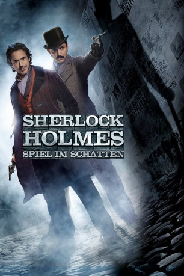

#2143 Sherlock Holmes - Spiel im Schatten
Alternativ: Sherlock Holmes: A Game of Shadows
 
 IMDB-Wertung: 7.5 / 10
IMDB-Wertung: 7.5 / 10  Metascore: 48
Metascore: 48 
Bei Spiel im Schatten trifft der britische Meisterdetektiv Sherlock Holmes auf seinen Erzfeind Dr. Moriarty. Er ist das kriminelle Genie in der Londoner Unterwelt, ein ebenbürtiger Bösewicht und Widersacher für Sherlock Holmes. Nur selten tritt er selbst in Erscheinung, meist zieht er im Hintergrund die Fäden. So auch, als der österreichische Kronprinz eines Tages tot aufgefunden wird und alles auf einen Selbstmord hindeutet. Nur Sherlock Holmes vermutet ein Verbrechen, das allerdings nur die Spitze einer weitverzweigten Verschwörung ist. Dieser Verdacht bestätigt sich, als auch die Zigeunerin Sim, die einzige Zeugin des Mordes, nur knapp einem Anschlag entgehen kann. Mit ihrer Hilfe reisen Sherlock Holmes und Doktor Watson durch halb Europa, um die Pläne Moriartys, der den Lauf der Geschichte verändern will, zu durchkreuzen.
Jahr: 2011
Dauer: 129 Minuten
FSK: 12
Land: USA Studio: Warner Bros.Tonspuren: DD5.1 - ,
Untertitel: Deutsch,
Auflösung: 1080p (1920x800) Größe: 7403 MB
Genre: Action, Abenteuer, Krimi, Mystery, Thriller
Regisseur:  Guy Ritchie
Guy Ritchie
Drehbuch: Michele Mulroney, Kieran Mulroney, Arthur Conan Doyle
Soundtrack: Hans Zimmer
Darsteller:
 Robert Downey Jr. als Sherlock Holmes
Robert Downey Jr. als Sherlock Holmes Jude Law als Dr. John Watson
Jude Law als Dr. John Watson Noomi Rapace als Madam Simza Heron
Noomi Rapace als Madam Simza Heron Rachel McAdams als Irene Adler
Rachel McAdams als Irene Adler Jared Harris als Professor James Moriarty
Jared Harris als Professor James Moriarty Stephen Fry als Mycroft Holmes
Stephen Fry als Mycroft Holmes Paul Anderson als Colonel Sebastian Moran
Paul Anderson als Colonel Sebastian Moran Kelly Reilly als Mary Watson
Kelly Reilly als Mary Watson Geraldine James als Mrs. Hudson
Geraldine James als Mrs. Hudson Eddie Marsan als Inspector Lestrade
Eddie Marsan als Inspector Lestrade William Houston als Constable Clark
William Houston als Constable Clark- Jack Laskey als Carruthers
- Karima Adebibe als Shush Club Maitre D'
 Richard Cunningham als Businessman
Richard Cunningham als Businessman- Marcus Shakesheff als Hashisheen
- George Taylor als University Student
- Alexander Devrient als Gypsy
 Thierry Neuvic als Claude Ravache
Thierry Neuvic als Claude Ravache Carsten Hayes als Ballroom Photographer
Carsten Hayes als Ballroom Photographer- Joe Egan als Big Joe
 Clive Russell als Captain Tanner
Clive Russell als Captain Tanner Lasco Atkins als Bar patron , uncredited
Lasco Atkins als Bar patron , uncredited Gioacchino Jim Cuffaro als Gypsy , uncredited
Gioacchino Jim Cuffaro als Gypsy , uncredited- Lukas DiSparrow als Dealer , uncredited
- Shonn Gregory als George , uncredited
 Jefferson King als Punter , uncredited
Jefferson King als Punter , uncredited- Jeff Lipman als Diplomat , uncredited
- Tom Swacha als Pub Guest , uncredited
- Charles Walters als Bomber , uncredited
 Wolf Kahler als Doctor Hoffmanstahl
Wolf Kahler als Doctor Hoffmanstahl- Iain Mitchell als Auctioneer
- Patricia Slater als Shush Club Maitre D'
- Mark Sheals als Cock Fight Referee
- Michael Webber als Vicar
- Mike Grady als Train Conductor
- Alexandre Carril als Twin
- Victor Carril als Twin
- Thorston Manderlay als Alfred Meinhard
 Affif Ben Badra als Tamas
Affif Ben Badra als Tamas- Daniel Naprous als Marko
- Lancelot Weaver als Stefan
- Vladimir 'Furdo' Furdik als Andrzej
- Jacques Senet Larson als Gypsy Kid
- Nicolas Senet Larson als Gypsy Kid
- Sebastian Senet Larson als Gypsy Kid
- Fatima Adoum als Gypsy
- Stanley Kaye als Stanley
- Martin Nelson als Commendatore
- Mark Evans als Don Giovanni
- Anthony Inglis als Conductor
Datei: X:\2-Dilogie(N-Z)\Sherlock Holmes\Sherlock Holmes - Spiel im Schatten (2011, FSK12, 1920x800).mkv seit 08.10.2015
Festplatte: HD Collection-2(A-Z)-3(A-M)
 Alle Filme aus Gruppe '2-Dilogie(N-Z)\Sherlock Holmes'
Alle Filme aus Gruppe '2-Dilogie(N-Z)\Sherlock Holmes'